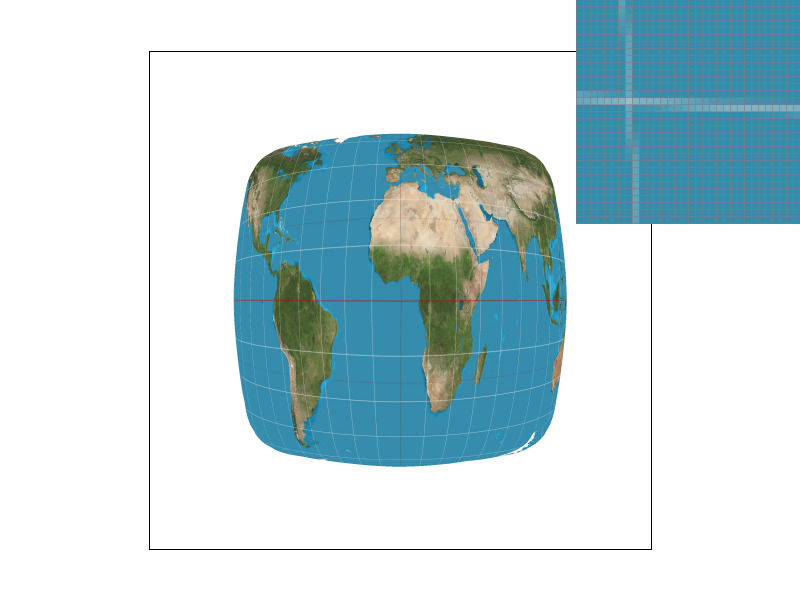
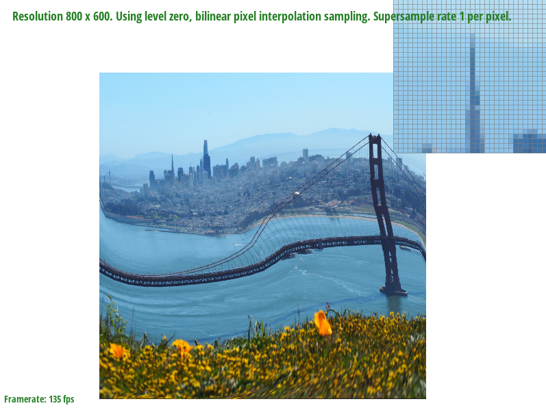
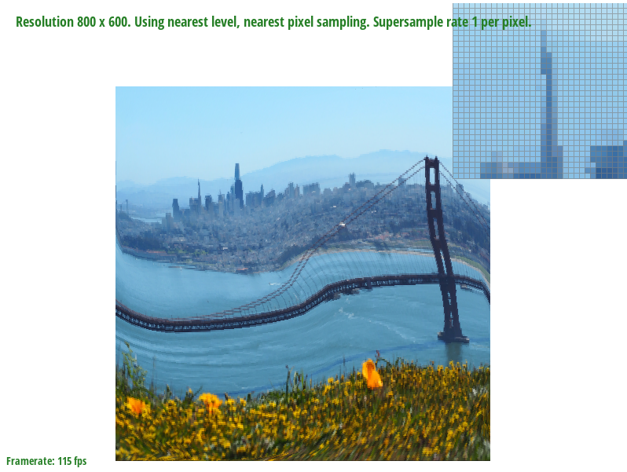
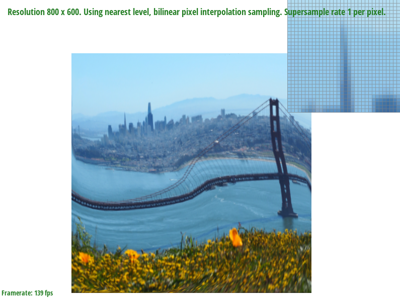

Overview:
At a high level, this project introduced ways to draw images to the screen, and then gradually added new techniques to be used to antialias.
We started out with implementing the most basic triangle rasterization by taking mid pixel samples and categorizing them as within a given triangle or not.
Immediately after that, we added supersampling which conceptually just samples more at finer points in order address the jaggies from the previous implementation.
Task 3 wasn't incredibly related to the other tasks in the project, but it gave a look at how models are constructed in an SVG file and specifically gave a better
understanding of the hierarchical construction of the model. Task 4 required implementing barycentric interpolation to interpolate the colors within triangles by
the colors of the vertices. Then, using that as a foundation, task 5 required barycentric interpolation in order to map positions in screen space to appropriate
locations in texture space in order to sample those textures to project onto the screen space. Task 6 then further builds on this by introducing level mapping with mipmaps
for the textures to address aliasing in the previous texture mapping. It was interesting to build basic solutions, notice potential issues or further applications for those
solutions, and then further adding things to either try to address those issues or to build upon the simpler implementations to do more.
Task1:
To rasterize triangles, we sample points on the screen space to see whether that point is within the triangle that is being rasterized.
If the point is within the triangle, the pixel corresponding to that point on the frame buffer will be colored in.
The algorithm I used does this by finding the minimum and maximum x and y coordinates between all the vertices of the triangle, rounding down
on the minimum and rounding up on the maximum. This establishes a box that covers the entire triangle. Then, it iterates over all the points in the box,
sampling at half integer coordinates in screen space. To check whether the sample is within the triangle, the algorithm checks if the sample point
is inside of each of the three lines comprising the edges of the triangle, counting the point as inside the triangle if it is inside all three lines.
However, the line equation can result in either values > 0 or < 0 being considered within the triangle depending on whether we define the lines going
counterclockwise around the vertices or clockwise around the vertices. Since the function doesn't check what direction the lines are formed through, the
algorithm instead checks that all of the line calculations end up greater than or equal to 0, or less than or equal to 0. This way, points within the triangle
are marked as such regardless of which direction the vertices were chosen. Finally, if the point is determined to be in the triangle, the corresponding pixel
is filled in the framebuffer.
This algorithm is the one that checks each sample within the bounding box of the triangle, so for obvious reasons it can't be worse than itself.
Task2:
The supersampling algorithm works by iterating through the box bounding the triangle as was done in Task 1, but instead of only sampling the midpoint of
the pixels, it divides each sampled pixel area into N even squares, where N is the sampling rate, and then sampling at the midpoint of each of these squares.
Since the sample rate is restricted to be either 1, 4, 9, or 16, we ignore the case where the sampled area can't be split up into even squares. The sample buffer
now needs to hold N samples for each pixel on the framebuffer, so it is resized to hold a factor N more or less entries whenever the sample rate is changed.
In addition, the fill pixel function now takes in another parameter which is sample, so that in the case of supersampling, N samples are stored at each corresponding
x, y coordinate in the sample buffer. For line and point rasterization, the one taken sample for each point is stored in all N entries for that point, which will average
out to be equivalent to doing one sample for line and point rasterization when it is resolved to the framebuffer. The resolve_to_framebuffer function takes the N samples
for each pixel in the framebuffer and we average their colors out by summing every one of their R, G, and B channels individually, and then dividing them by N.
Finally, it puts that averaged color onto the framebuffer.
Supersampling is useful because it can be used for antialiasing. We antialiased here using supersampling and then downsampling, which effectively works as if we
convolved the image by a 1 pixel box blur and then sampled. In both cases, the high frequency changes of the image are attenuated, reducing the amount of aliasing.
With no supersampling, we observe jaggies when at the edges of the triangle where we quickly change from a filled pixel to an empty pixel

With a sample rate a 4, some of the pixels that were on the boundaries of the triangle and were colored either fully or not at all are now averaged to intermediate
colors. Thus, the higher frequency changes are slightly attenuated, reducing the aliasing.
This has a sample rate of 16, so the effects are essentially the same as the 4 sample case, but with more accuracy and lowering the high frequency changes further.
Task3:
The robot is supposed to be waving, with its left arm to its side and its right arm in the air, with a slight head tilt towards its left.
Task4:
Barycentric coordinates is a coordinate system for triangles that essentially introduces a weighting for each vertex of the triangle that changes depending on
a point's distance from each vertex. These weights allow you to interpolate values within the triangle from just the vertices. As an example, when we make a colortri
where there is one solid red, green, and blue vertex, we use barycentric coordinates to interpolate the colors within the triangle. The areas closer to the red vertex are more red,
the areas closer to the green vertex are more green, and the areas closer to the blue vertex are more blue. When moving away from one of the vertex, the "color weight" from that
vertex becomes smaller, while the weight of the vertices being approached increase, increasing the value of those vertices' colors at the new point.
Task5:
Pixel sampling is applying textures to a screen space pixel by mapping the screen space coordinate to the appropriate coordinate in texture space, getting a sample at that coordinate,
and assigning that to the original pixel in screen space. In task 5, this was implemented by using barycentric interpolation at each sample point to find the corresponding coordinate
in textures space through weighting the given vertices of the texture space mapped triangle. Once that coordinate was gotten, the pixel sampling could be done with either nearest pixel,
which simply samples the nearest pixel in texture space to the u, v coordinate and uses that to color the original screen space pixel, or with bilinear sampling which essentially interpolates
using the four nearest texture pixels with linear interpolations.
Here we see that with bilinear sampling, there are significantly less jaggies and the line is drawn smoother.
With supersampling, the differences between the two sampling methods is very minor.
There will be a large difference between the two sampling methods when are high frequency changes between sampled pixels in the texture space.
The bilinear sampling will serve to average out the pixel values, attenuating the high frequency changes while nearest pixel sampling will have aliasing.
With supersampling, since we're already attenuating high frequencies, the two sampling methods become similar in their results. However, it is important to note
that bilinear sampling for antialiasing is much quicker than supersampling with high numbers of samples.
Task6:
Level sampling approximates the frequency at the screen space coordinate, and uses that approximation in order to choose a mipmap level to sample from.
Higher frequencies will require higher mipmap levels, which would entail a downsampled, lower resolution texture map. By doing this, low frequency spaces
can maintain high resolution sampling, while high frequency spaces can be antialiased with the lower resolution blurring. In this project, I implemented it
by using barycentric interpolation to find the coordinates that map the screen space coordinates (x, y), (x+1, y), and (x, y+1) to texture space. With these,
we could find the rate of change of the texture space coordinates with respect to the x and y coordinates, and with these, we could use the formulas from lecture
to calculate the appropriate mipmap level. Sampling as done in task 5 is then just repeated, though sampling from the appropriate mipmap level. The texture
sampling could be done with either the mipmap level closest to the calculated level, or by doing an interpolation between the levels that are one above and
one below the calculated level.
Pixel sampling with bilinear interpolation provides decent antialiasing by doing a weighted average across the nearpy pixels in the texture space, attenuating
the higher frequencies. The memory use isn't more than just the stored texture, though the speed is lowered by the three linear interpolations needed per pixel.
Level sampling also provides antialiasing benefits by matching low frequency areas with high resolution textures and high frequency areas with low resolution textures.
The speed is slowed by the overhead of calculating the mipmap level which at a glance seems to require more operations than the bilinear interpolation. The memory required
is 33% more than that of just the texture alone as extra space is needed for the higher mipmap levels.
Supersampling works well to provide high quality, but it costs a lot as it increases the amount of memory required and the number of operations made by a factor equal
to the number of extra samples.
L_ZERO, P_NEAREST
L_ZERO, P_LINEAR
L_NEAREST, P_NEAREST
L_NEAREST, P_LINEAR